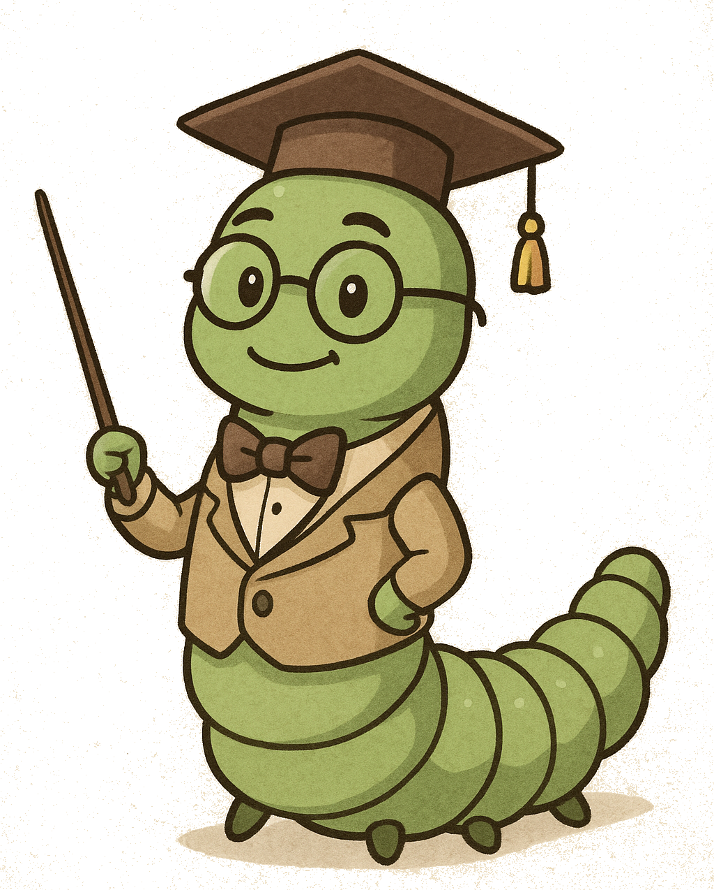

Skor:
0
Panjang:
3
Kecepatan:
Normal
Mulai / Restart
▲
◀
▶
▼
Petunjuk
Gerakkan ulat dengan panah / WASD
Makan buah → muncul pertanyaan IPS
Benar = poin + panjang
Salah = ulat melemah 10 detik

❌ Jawaban Salah
Ulat anda jatuh sakit 🤒
OK